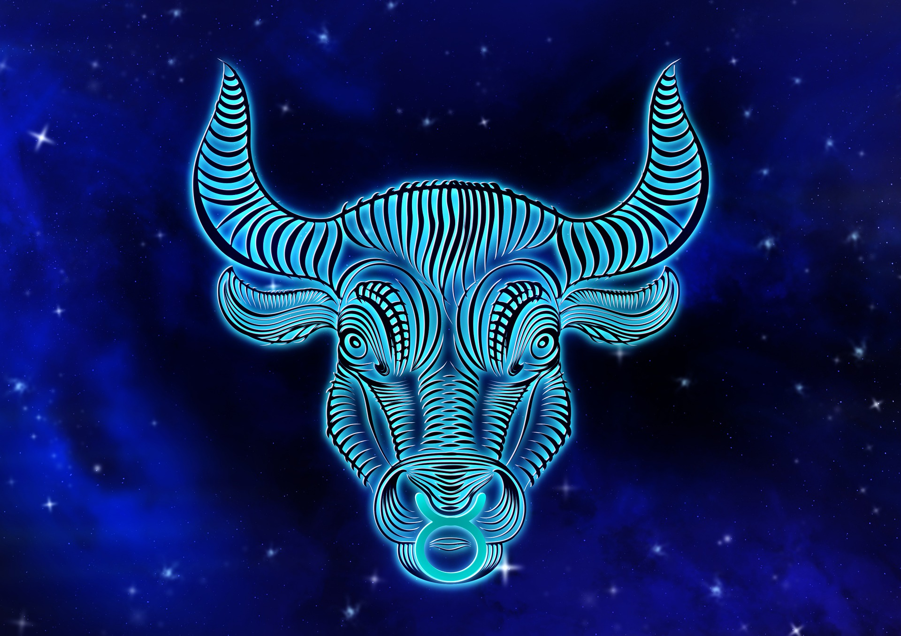

황소자리

황소자리(라틴어: Taurus 타우루스[*])는 오리온 자리의 북서쪽에 놓인 별자리로, 황도 12궁에 속한다. 황소자리는 우측에서 오리온자리를 향해 뿔을 내미는 황소의 앞부분의 모습이 그려진다.
신화이야기
플레이아데스 성단은, 그리스 신화에서는 플레이아데스 7자매와 관련이 있다. 이들은 흥겹게 춤을 추고 있을 때에 용사 오리온이 나타나, 모두 놀라 달아났다. 하지만, 이들은 미인이어서 오리온이 5년간 쫓아다녔다. 7인은 여신 아르테미스의 도움을 받아 학이 되어 오리온으로부터 달아났다. 그 후, 별자리에 올려져 플레이아데스 성단이 되었다고 한다.
플레이아데스 성단은 육안으로 보면 6개만 보인다. 7명 중 1명은 숨어 있다고 전해지며, 그 1명은 멜로페라는 주장과 에렉트라라는 주장이 있다. 7인으로 불렸기에, 원래는 7개의 별이 보였던 시대가 있었다고 주장되기도 한다. 시계가 좋으면 때때로 7개가 보이기도 한다.‘동아시아의 별자리’에서는 묘수가 7개의 별로 구성된 별자리로 그려져 있다.[4]
히아데스 성단도 그리스 신화에서는 자매로 불린다.